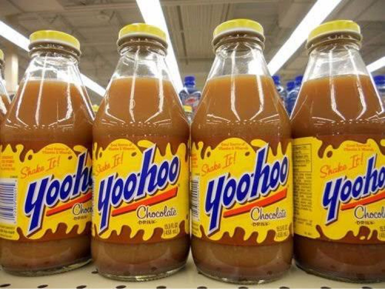

Every snack you grew up with, remembered.
The searchable archive of 90s snacks, drinks & fast food throwbacks.

Fresh in the archiveYoo-hoo in glass — the way it hit different.
Fresh in the archive
Newest entries first — the archive grows with every blog post.
Oreo Sippers
The cookie straw you drank your milk through.
DiscontinuedYoo-hoo
The chocolate drink you had to shake — in that glass bottle.
Still soldPepsi Blue
The electric blue berry soda that defined 2002 — and vanished.
DiscontinuedPop-Tarts Crunch
The 90s cereal that turned breakfast into dessert.
DiscontinuedBrowse by craving
Six shelves, zero willpower required.
From the blog
The deep-dives live on Substack — the latest three:
Yoo-hoo: The 90s Chocolate Drink You Had to Shake
The glass-bottle era, the ritual, and the yellow label that raised us.
Whopperrito: The Whopper in a Burrito
Burger King's 2016 mashup that shouldn't have worked — and absolutely did.
Pop-Tarts Crunch: Breakfast Into Dessert
The toaster king, shrunk for a spoon — and gone in about a year.
Suggest a snack
The archive roadmap is reader-powered — the most-requested snacks jump the queue.
contact us
Corrections, memories, business, or just to say hi — this form lands straight in the curator's inbox. No account, no mailing list, no noise.
All the flavor. None of the “you had to be there.”
Every entry is a story first — the snack, the hype, the disappearance, the sightings since. If it lived in a 90s lunchbox, vending machine, or drive-thru window, it belongs here.
why 90s foodie?
the good stuff
- Real stories behind every snack — not just a name and a date
- Flavors, years, and fates, documented
- Picks powered by the community that lived it
zero fluff
- No pop-ups, no autoplay, no interstitials — ever
- No accounts and no tracking walls
- Just the archive, searchable end to end